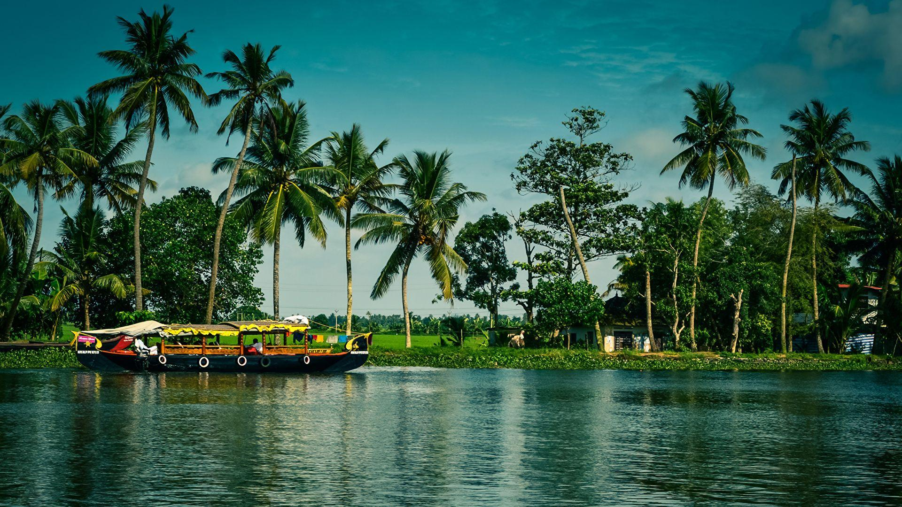

Day 1
Arrive in Kochi and explore the city if time allows.
Plan Kerala tour packages with Munnar tea hills, Alleppey backwaters, Kochi heritage and scenic nature stays. Customize your Kerala holiday with Unique Vacations India.

Kerala combines green hill stations, backwaters, coastal culture and relaxed nature stays. Build a route that balances driving time with the places you want to experience, from Munnar’s tea landscapes to a backwater stay around Alleppey.
Tell us your preferred dates, number of travellers, departure city and budget range. We can help you compare suitable itinerary and accommodation options before you confirm your booking.
Request a customized quote →Use these ideas to build a trip that fits your interests and available time.
This is an illustrative outline, not a confirmed package. Final routing depends on your dates, availability and preferences.
Arrive in Kochi and explore the city if time allows.
Travel to Munnar and enjoy the hill scenery.
Explore tea gardens and local viewpoints.
Travel towards Alleppey for a backwater experience.
Return to Kochi or continue to your departure point.
Important details to check while planning your holiday.
Yes. Houseboat options can be considered based on availability, group size and meal preferences.
Yes. The itinerary can include scenic stays, relaxed sightseeing and suitable accommodation options.
It can be adjusted for family needs, though travel distances and road time should be considered.
Share your travel dates, traveller count and preferences. We will help you explore suitable options.